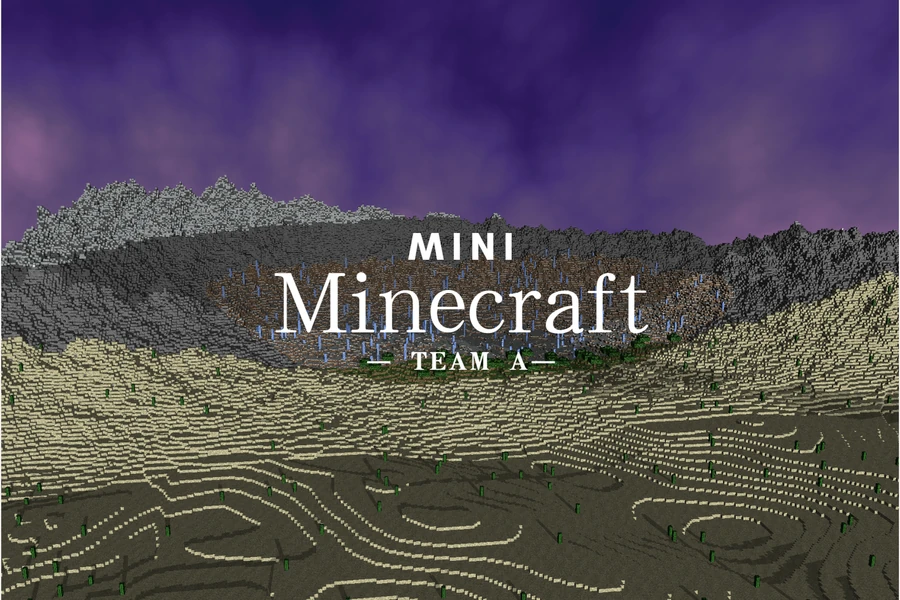
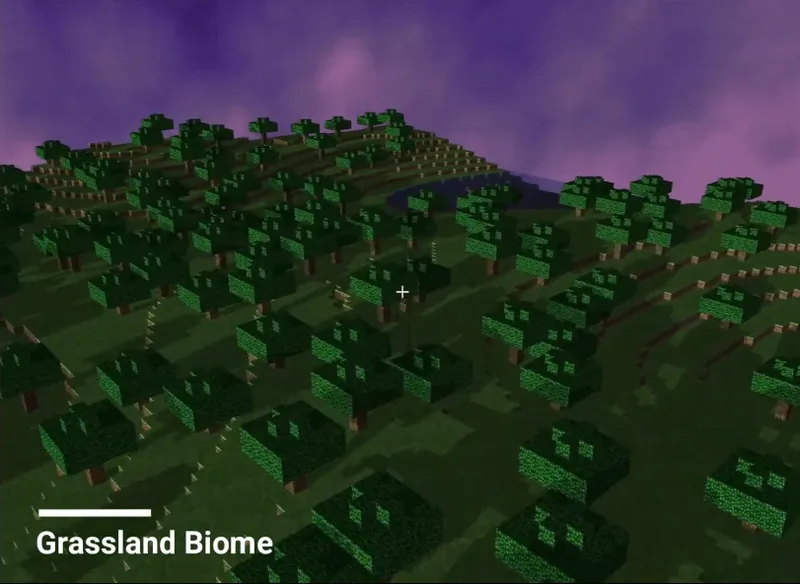
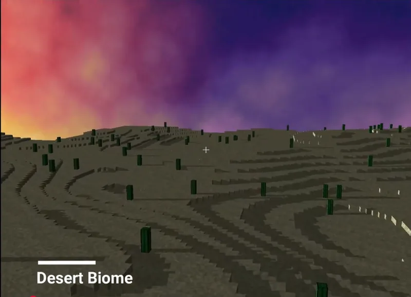
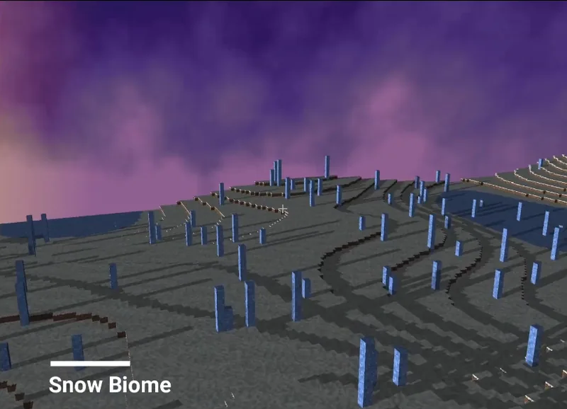
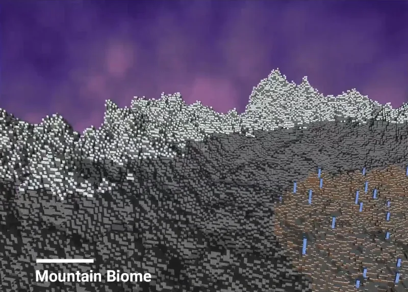

← All works
Mini Minecraft
A Minecraft-like game written in C++ and OpenGL. We did not use a game engine: every visual effect is built from OpenGL and Qt.

- Year
- 2023
- Type
- Team project
- Built with
- C++, OpenGL, GLSL, Qt 6
Overview
I mainly implemented the following features in this game:
- Procedural terrainFour biomes: grassland, desert, mountain and snowfield
- TexturingTextures and texture animation
- Procedural assetsPlaced procedurally across the terrain
- Procedural buildingsShape grammars (L-systems)
- RenderingCube-face rendering optimization, custom culling and shadows
On YouTube:
On Bilibili:


Biomes
-

Grassland -

Desert -

Snowfield -

Mountain